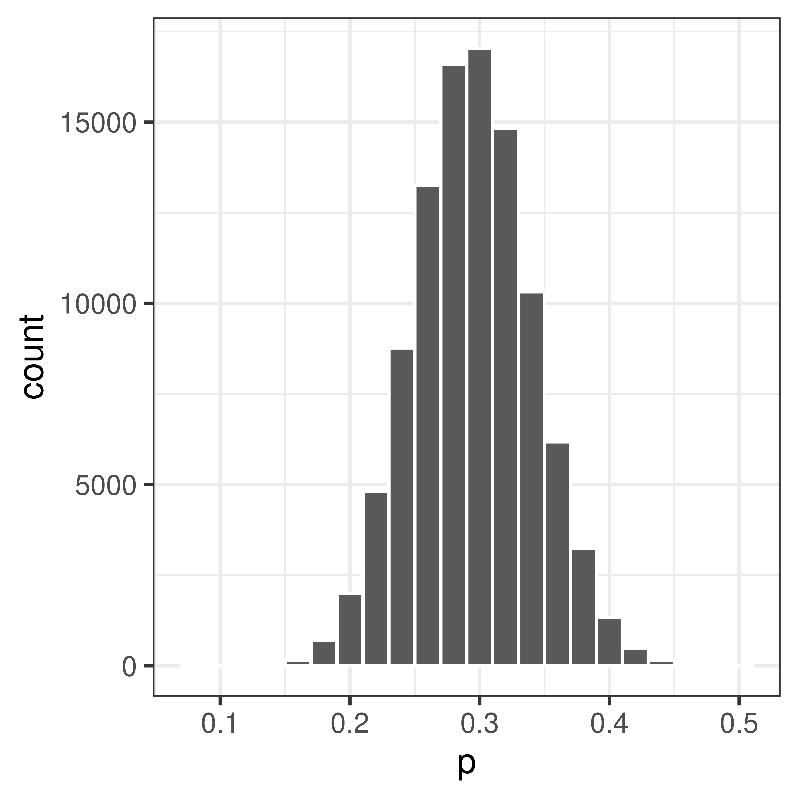
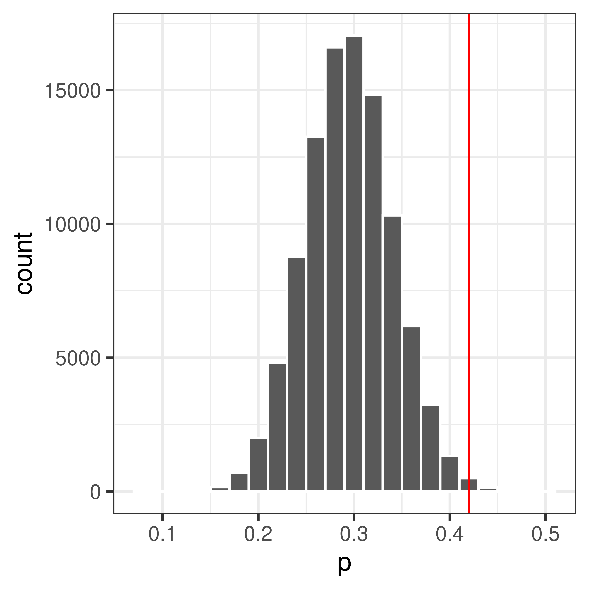
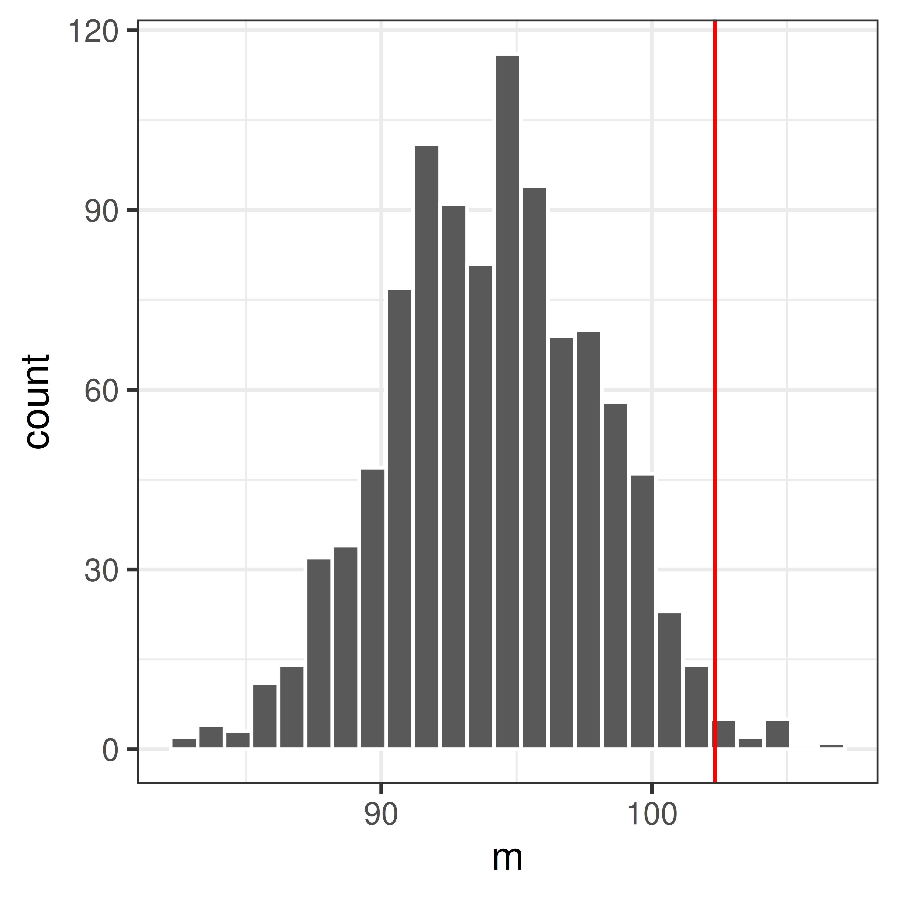
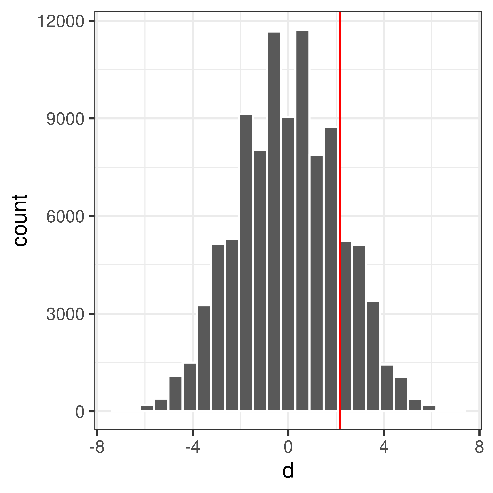

2 Hypothesis testing using resampling
The null distribution, the sampling distribution of a test statistic under the null hypothesis, is sometimes known or can be approximated. When the null distribution is unknown, another option is to estimate the null distribution using resampling.
2.1 Resampling from a known population under \(H_0\)
If it is possible to simulate sampling under the null hypothesis, resampling can be used to estimate the null distribution, just like we did in the previous session about estimating probabilties and probability distributions using resampling.
This is done by setting up a model under the null hypothesis (e.g. using an urn model) and drawing random samples from this model repeatedly.
Example 2.1 (Proportions, pollen allergy) Let’s assume we know that the proportion of pollen allergy in Sweden is \(0.3\). We suspect that the number of pollen allergic has increased in Uppsala in the last couple of years and want to investigate this.
Observe 100 people from Uppsala, 42 of these were allergic to pollen. Is there a reason to believe that the proportion of pollen allergic in Uppsala \(\pi > 0.3\)?
Null and alternative hypotheses
\(H_0:\) The proportion of pollen allergy in Uppsala is the same as in Sweden as a whole.
\(H_1:\) The proportion of pollen allergy in Uppsala is greater than in Sweden as a whole.
or expressed differently;
\[H_0:\, \pi=\pi_0\]
\[H_1:\, \pi>\pi_0\] where \(\pi\) is the unknown proportion of pollen allergy in the Uppsala population and \(\pi_0 = 0.3\) is the proportion of pollen allergy in Sweden.
Significance level
Here we let \(\alpha = 0.05\).
Test statistic
Here we are interested in the proportion of pollen allergic in Uppsala. An appropriate test statistic could be the number of pollen allergic in a sample of size \(n=100\), \(X\). As an alternative we can use the proportion of pollen allergic in a sample of size \(n\),
\[P = \frac{X}{n}\]
Let’s use \(P\) as our test statistic and compute the observed value, \(p_{obs}\). In our sample of 100 people from Uppsala, the proportion allergic to pollen is \(p_{obs}=42/100=0.42\).
Null distribution
The sampling distribution of \(P\) under \(H_0\) (i.e. when the null hypothesis is true) is what we call the null distribution.
\(H_0\) state that \(\pi=0.3\). We can model this using an urn model as follows;
Using this model, we can simulate taking a sample of size 100 many times.
## Urn
urn <- rep(c(0, 1), c(7, 3))
## Sample 100 times with replacement
x <- sample(urn, 100, replace=TRUE)
## Compute proportion of samples that are allergic (1)
mean(x)[1] 0.27## Set the seed to get the same result if we redo the analysis
set.seed(13)
## Repeat drawing sample of size 100 and computing proporion allergic 100000 times
p <- replicate(100000, mean(sample(rep(c(0, 1), c(7, 3)), 100, replace=TRUE)))Plot the distribution

Compute p-value
Compare the observed value, \(p_{obs} = 0.42\) to the null distribution.

The p-value is the probability of getting the observed value or higher, if the null hypothesis is true.
Use the null distribution to calculate the p-value, \(P(P \geq 0.42|H_0)\).
## How many times
sum(p >= 0.42)[1] 703## p-value
pval <- mean(p >= 0.42)p = \(P(P \geq 0.42|H_0)\) = 0.00703
Accept or reject \(H_0\)?
As the p-value is \(< \alpha = 0.05\) the null hypotheis is rejected. This means that we can conclude that there is reason to belive that the porportion of pollen allergic in Uppsala is greater than 30%.
2.2 Bootstrap resampling
Bootstrap is a resampling technique that resamples with replacement from the available data (random sample) to construct new simulated samples. These bootstrapped samples can be used to estimate sampling distributions that can be used to estimate properties such as standard error and interval estimates, but also to perform hypothesis testing.
We will get back to constructing bootstrap interval estimates in Section 5.3.1. Here we will focus on hypothesis testing using bootstrap.
Bootstrapping can be used to construct the null distribution in hypothesis testing. To do so, we first need to modify the observed sample according to the null hyothesis, before resampling with replacement.
For a one sample test of means the hypotheses can be;
\[H_0: \mu=\mu_0\] \[H_1: \mu>\mu_0\] Let our observed random sample of size \(n\) be \(x_1, x_2, \dots, x_n\), with sample mean \(m_{obs} = \bar x\). For simplicity we can use sample mean as out test statistic.
To contruct a sampling distribution when \(H_0\) is true we would need a modified sample with mean \(\mu_0\), which can be constructed by computing \(x_i'=x_i-m_{obs} + \mu_0\). A null distribution can then be estimated using bootstrapping as follows;
- Take a random sample of size \(n\) with replacement from \(x_1', x_2', \dots, x_n'\). Note that the same value might be selected more than once as we sample with replacement. Denote our bootstrap resample \(x^*\).
- Compute the mean value of the bootstrap resample \(x^*\) and denote the mean \(m^*\).
Repeat 1 and 2 many times to get a distribution of mean values \(m^*\), a bootstrap estimate of the null distribution of sample means. Many times can e.g. be \(B=1000\).
The p-value can be estimated as the number of times \(m^* \geq m_{obs}\) divided by \(B\)
\[p = \frac{\sum_{k=1}^B I(m^*_k \geq m_{obs})}{B}.\]
Example 2.2 (Mean value, bootstrap) Men with a waist circumference greater than 94 cm have been shown to have an increased risk of cardiovascular disease. Based on the following waist circumferences of 12 diabetic men, is there reason to believe that the mean waist circumference of diabetic men is greater than 94 cm?
97, 97, 89, 84, 124, 107, 99, 122, 102, 114, 109, 84
x <- c(97, 97, 89, 84, 124, 107, 99, 122, 102, 114, 109, 84)Null and alternartive hypotheses
\[H_0: \mu=94\] \[H_1: \mu>94\]
Significance level
Here we let \(\alpha = 0.05\).
Test statistic
Here we will use the sample mean, \(m\), as test statistic.
\(m_{obs} = 102.3\)
mobs <- mean(x)Null distribution
Assume that the \(H_0\) is true and compute the sampling distribution of sample means \(m\). We will estimate the null distributiuon using bootstrap resampling.
First modify the sample we have to have mean 94 cm (according to the null distribution), we do this by subtracting \(m_{obs}\) and adding 94 to the observations.
xnull <- x - mobs + 94Resample with replacement to get a bootstrap sample of size 12 (same as the original sample) and compute the mean.
[1] 91.33Repeat 1000 times.
mnull <- replicate(1000, mean(sample(xnull, replace=TRUE)))Plot the null distribution in a histogram and compare with the observed value \(m_{obs}\).
ggplot(data.frame(m=mnull), aes(x=m)) +
geom_histogram(bins=25, color="white") +
theme_bw() +
geom_vline(xintercept=mobs, color="red")
Compute p-value
The p-value is the probability of seeing the observed value or something more extreme.
p <- mean(mnull>=mobs)As the computed p-value \(<\alpha=0.05\) the null hypothesis is rejected and we conclude that there is reason to belive that diabetic men have a mean waist circumference greater than 94 cm.
2.2.1 Permutation
Another resampling techinque is permutation. A permutation test answers the question whether an observed effect could be due only to the random sampling. Permutations are commonly used in clinical settings where a treatment group is compared to a control group.
A permtuation test involves comparing two (or more) groups, usually by computing the difference of a property of the two groups, e.g. a mean difference, where the null hypotheis is that there is no difference between the groups (with regards to the studied property).
In a permutation test the null distribution is computed by permuting (rearranging) the observations so that they are randomly assigned to the two groups and computing the test statistic _(e.g. mean difference). This can be achieved by keeping the order of the group labels and resampling (without replacement) the observations.
The null distribution is a distribution of test statistics that could be explained by the random sampling. If the observed effect is much more extreme than what could be explained just by the random sampling, we can conclude that there is a difference between the groups (the treatment has an effect).
Example 2.3 (Do high fat diet lead to increased body weight?) The effect of high-fat diet on the body weight of mice is studied in an experiment. The study setup is as follows:
- 24 female mice are ordered from a lab.
- Randomly, 12 of the 24 mice are assigned to receive high-fat diet, the remaining 12 are controls (ordinary diet).
- Body weight is measured after one week.
The observed values, mouse weights in grams, are summarized below;
| high-fat | 25 | 30 | 23 | 18 | 31 | 24 | 39 | 26 | 36 | 29 | 23 | 32 |
| ordinary | 27 | 25 | 22 | 23 | 25 | 37 | 24 | 26 | 21 | 26 | 30 | 24 |
Null and alternative hypotheses
\[ \begin{aligned} H_0: \mu_d = \mu_c \iff \mu_d - \mu_c = 0\\ H_1: \mu_d>\mu_c \iff \mu_d-\mu_c > 0 \end{aligned} \]
where \(\mu_d\) is the (unknown) mean body weight of the high-fat mouse population and \(\mu_c\) is the mean body-weight of the control mouse population.
Studied population: Female mice that can be ordered from a lab.
Test statistic
Here we are interested in the mean difference between high-fat and control mice and an appropriate test statistic can be the mean diffrence, \(D = \bar X_d - \bar X_c\), where
- \(\bar X_d\) is a random variable describing the mean weight of 12 (randomly selected) mice on high-fat diet. \(E[\bar X_d] = E[X_d] = \mu_d\)
- \(\bar X_c\) is a random variable describing the Mean weight of 12 (randomly selected) mice on ordinary diet. \(E[\bar X_c] = E[X_c] = \mu_c\)
The mean difference \(D = \bar X_d - \bar X_c\) is also a random variable.
Observed values;
## 12 HF mice
xD <- c(25, 30, 23, 18, 31, 24, 39, 26, 36, 29, 23, 32)
## 12 control mice
xC <- c(27, 25, 22, 23, 25, 37, 24, 26, 21, 26, 30, 24)
##Compute mean body weights of the two samples
mD <- mean(xD)
mC <- mean(xC)
## Compute mean difference
dobs <- mD - mCMean weight of sample control mice (ordinary diet): \(\bar x_c = 25.83\)
Mean weight of sample mice on high-fat diet: \(\bar x_d = 28.00\)
Difference in sample mean weights: \(d_{obs} = \bar x_d - \bar x_c = 2.1667\)
Null distribution
If high-fat diet has no effect, i.e. if \(H_0\) was true, the result would be as if all mice were given the same diet. What can we expect if all mice are fed with the same type of food?
This can be accomplished using permutation
The 24 mice were initially from the same population, depending on how the mice are randomly assigned to high-fat and normal group, the mean weights would differ, even if the two groups were treated the same.
Assume \(H_0\) is true, i.e. assume all mice are equivalent and
- Randomly reassign 12 of the 24 mice to ‘high-fat’ and the remaining 12 to ‘control’.
- Compute difference in mean weights
If we repeat 1-2 many times we get the null distribution of difference in mean weights.
## All 24 body weights in a vector
x <- c(xHF, xN)
## Mean difference
dobs <- mean(x[1:12]) - mean(x[13:24])
## Permute once
y <- sample(x)
##Compute mean difference
mean(y[1:12]) - mean(y[13:24])[1] -3.5##Repeat the above many times
dnull.perm <- replicate(n = 100000, {
y <- sample(x)
##Mean difference
mean(y[1:12]) - mean(y[13:24])
})Plot the null distribution and the observed difference.

Compute p-value
What is the probability to get an at least as extreme mean difference as our observed value, \(d_{obs}\), if \(H_0\) was true?
## Compute the p-value
pval <- mean(dnull.perm>=dobs)\[P(\bar X_2 - \bar X_1 \geq d_{obs} | H_0) = 0.169\]
Accept or reject \(H_0\)?
As \(0.169>0.05\) the null hypothesis is accepted, there is no evidence that the high-fat diet increase body weight in mice.